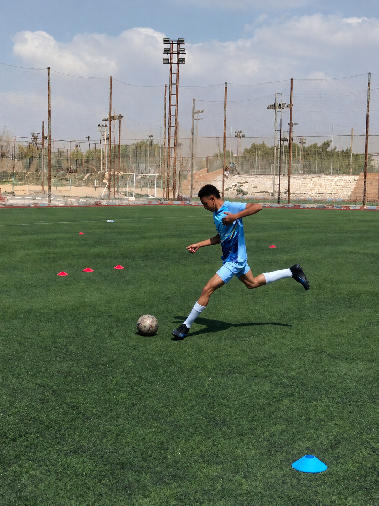
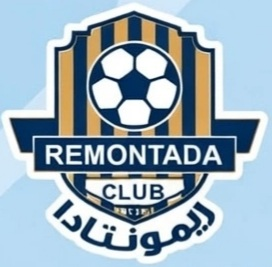

ملف لاعب كرة قدم
محمد سيد
لاعب كرة قدم — جناح أيسر. السرعة، التحرك وصناعة الفرص جزء من أسلوبي داخل الملعب.
جناح أيسرهداف الدوري
<

الصورة الشخصية
عن اللاعب
أنا محمد سيد، لاعب كرة قدم بمركز الجناح الأيسر. أركز على تطوير مستواي والعمل مع الفريق وتقديم أفضل أداء في المباريات.
النادي والفريق

نادي ريمونتادا
أضف اسم ناديك هنا
الشعار: أضف صورة باسم club-logo.png
الأرقام والإنجازات
إنجاز
هداف الدوري
وفق المعلومة التي زودتني بها
المباريات
16
عدد المباريات
الأهداف والتمريرات
35
تُضاف الإحصائيات الموثقة لاحقًا
ملاحظة: الأفضل عدم نشر تفاصيل الراتب أو المكافآت المالية على موقع عام؛ خليها خاصة بينك وبين النادي.
مركزي داخل الملعب
الجناح الأيسر
التحرك على الطرف وصناعة الفرص ومساندة الهجوم.